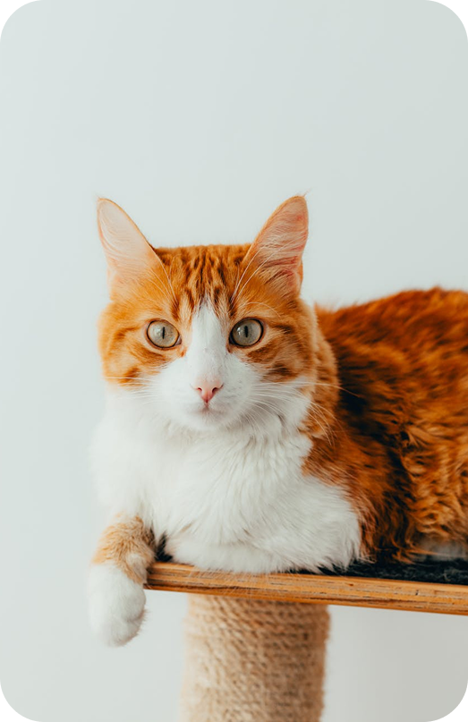

A Associação Brusquense de Proteção aos Animais (Acapra) é uma organização não governamental dedicada à proteção e bem-estar dos animais em Brusque, Santa Catarina. Fundada em 2000, a entidade tem como função resgatar, reabilitar e promover a adoção de animais abandonados ou vítimas de maus-tratos, além de conscientizar a comunidade sobre a importância da posse responsável e do respeito aos animais.
Em setembro de 2022, a Acapra enfrentava desafios financeiros significativos, com dívidas estimadas em R$ 30 mil. Essas dificuldades impactaram a capacidade de atendimento e resgate de animais. Já em agosto de 2024, as dívidas ultrapassaram R$ 100 mil, levando à paralisação temporária das atividades da ONG. Atualmente a dívida ultrapassa 80mil.

As denúncias podem ser feitas pelo telefone 0800 61 8080 (gratuitamente) ou pelo email para linhaverde.sede@ibama.gov.br. O IBAMA (Instituto Brasileiro do Meio Ambiente e dos Recursos Naturais Renováveis) as encaminhará para a delegacia mais próxima do local da agressão.